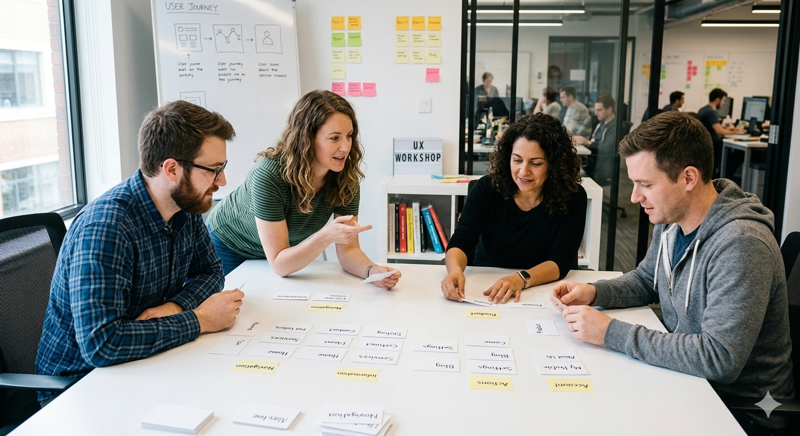
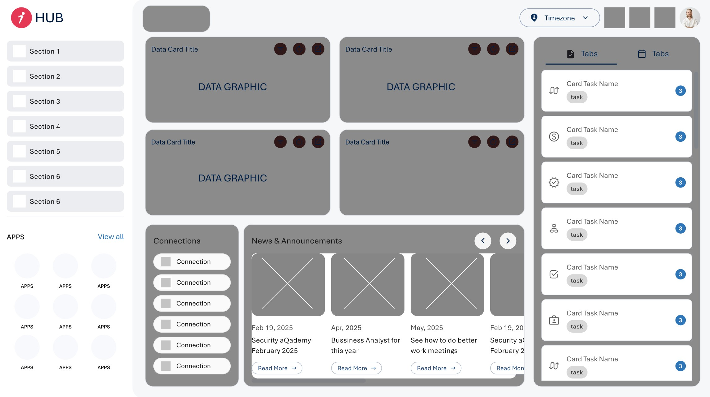

01 Overview
iQor HUB is the internal operating platform for all iQor employees worldwide. It acts as a unified access layer for every internal application in the organization, surfacing tools and content dynamically based on each employee's role, so no two dashboards look identical.
Beyond app access, the HUB integrates task management across connected platforms, aggregates company-wide announcements from a dedicated CMS, and supports team communication through direct messaging, group chats, and video calls, consolidating the entire employee digital experience into a single interface.
02 The Problem
Before iQor HUB existed, employees navigated a fragmented ecosystem of standalone applications. Accessing different internal services meant switching between disconnected tools and opening multiple browser pop-up windows, a daily friction point repeated thousands of times across a global workforce.
There was no shared digital home. Tasks lived in separate systems, company news required seeking out, and communication happened outside any unified structure. Every workflow started the same way: context-switching across a desktop cluttered with unrelated tabs and windows.
Design Thinking Process
How Might We
"How might we give 44,000+ employees instant, role-appropriate access to every internal tool — from a single, always-available starting point?"
User Persona
Marcus T.
Customer Service Agent
5 years at iQor · Phoenix, AZ
Goals
- All tools from a single dashboard
- Company news without hunting for it
- Communicate without leaving workflow
Pain Points
- Opens 8+ browser tabs every shift
- Misses announcements buried in emails
- Constant context-switching to coordinate
"I just want everything in one place. I shouldn't need 8 bookmarks to start my shift."
03 Process
The project followed a Design Thinking methodology, applying each phase deliberately. We opened with a card sorting session with key project stakeholders, gathering a broad range of ideas, aligning priorities, and establishing the direction of the platform. This gave everyone a shared vocabulary before any design decisions were made.
From there, we moved into direct conversations with employees across the organization. They walked us through their daily frustrations with the company's existing tools, the browser pop-ups, the tab overload, the constant context-switching, and described what a better solution would feel like for their specific workflows.

Card sorting session, aligning stakeholders on platform priorities. Esta imagen es ilustrativa del card sorting.
User Flow · Before & After
Before — Fragmented Access
pop-up
new tab
tab
for news
ext. chat
After — iQor HUB V1
Launcher
ments
With a clear picture of user needs, we moved into ideation and information architecture, organizing insights into a coherent structural plan for the application. Multiple wireframe rounds followed, from rough low-fidelity sketches to mid-fidelity flows, which gave shape to the first version of the platform.
The HUB has gone through two major iterations. V1 established the foundation: the role-based app layer, the task system, the announcement feed. V2, the version currently in production, refined the experience based on real usage, expanding the communication module and tightening the overall information hierarchy.

Early wireframes, first structural exploration of the platform
Information Architecture
iQor HUB · Site Map
04 Solution
iQor HUB consolidates the entire internal ecosystem into one adaptive interface. Applications are surfaced per employee role: each user sees exactly the tools relevant to their position, nothing more. A unified task layer aggregates pending items from every connected platform, giving employees a single place to manage their workload.
The integrated communications module supports direct messaging, group chats, and video calls, reducing reliance on external tools. A live announcement feed powered by the CMS delivers critical company updates to all employees in real time, with content authored and managed entirely outside the HUB.

iQor HUB V1, first functional version of the platform
Version 1 already delivered measurable results: it successfully reduced daily friction for employees by consolidating all iQor applications into a single access point. Beyond app unification, V1 introduced a dynamic insights dashboard that surfaces key metrics and graphic data tailored to each employee's role, giving every user a relevant, personalized view of their work environment from day one.
05 Results
The following metrics reflect platform adoption and user experience improvement measured after the launch of iQor HUB V1 across the global workforce.
83%
Platform adoption rate
90%
Reduction in access time
44K+
Active employees worldwide